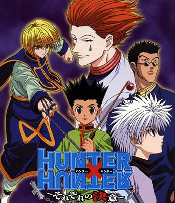

Hunter X Hunter
Hunter X Hunter é uma série de mangá escrita e ilustrada por Yoshihiro Togashi. Os capítulos são serializados na revista Weekly Shōnen Jump desde 3 de março de 1998, onde são compilados e publicados em formato tankobon pela editora Shueisha, embora o mangá tenha frequentemente entrado em hiato desde 2006. A história tem como protagonista Gon Freecss, um menino de 12 anos que quer encontrar o seu pai a todo o custo, então ele decide se tornar um "Hunter", assim como ele, e de alguma forma encontrar o seu paradeiro. À medida que a história avança, Gon faz amizade com outros três Hunters aspirantes: Leorio, Kurapika e Killua, que o acompanham em suas aventuras. No Brasil, o mangá é licenciado e publicado pela editora JBC desde 2008.
Hunter × Hunter tem sido um enorme sucesso de crítica e comercial e se tornou uma das séries de mangá mais vendida da Shueisha, tendo 78 milhões de cópias em circulação apenas a partir de novembro 2019.
Sinopse
Doze anos antes do início da história, Ging Freecss deixou seu filho Gon nas mãos de sua tia Mito na Ilha da Baleia. Gon, que sempre acreditou que seus pais tinham morrido, descobre um dia graças ao aprendiz de seu pai, Kite, que ele ainda está vivo e se tornou um dos melhores Hunters,[6][7] indivíduos de elite e licenciados para rastrear tesouros secretos, animais exóticos e até mesmo outros indivíduos.[8] Motivado por esta revelação, Gon decide sair de casa e entrar no Exame Hunter,[9] que tem uma série de desafios que buscam testar suas habilidades, como de sobrevivência e trabalho em equipe de seus participantes.
Durante o exame, Gon, conhece e faz amizade com outros três participantes: Kurapika, o último membro do clã Kurata, que quer se tornar um Hunter, a fim de vingar sua família e recuperar os olhos escarlate que foram roubados de seus corpos por um grupo de mercenários conhecidos como Gen'ei Ryodan; Leorio, que só quer ser um Hunter para poder pagar seus estudos de medicina; e Killua Zoldyck, um jovem que deixou sua antiga vida como um membro da família mais famosa de assassinos.[10] Assim, este pequeno grupo de amigos embarcam em uma série de aventuras com cada um tentando conquistar seus objetivos.
Elenco

Principais
- - Gon Freecss (ゴン・フリークス Gon Furīkusu?): é o protagonista da história, um menino de 12 anos que deseja se tornar um Hunter para encontrar seu pai, o lendário Hunter Ging Freecss. Depois de ter vivido muito tempo na floresta, enquanto ele era mais jovem, acabou se tornando muito bom em lidar com animais. Também, possui sentidos extraordinários de olfato e visão. Nas versões japonesas seus seiyūs são Junko Takeuchi no primeiro anime e Megumi Han no segundo, na dublagem brasileira é dublado por Yuri Chesman.
- - Killua Zoldyck (キルア・ゾルディック Kirua Zorudikku?): é um menino de 12 anos e melhor amigo do protagonista Gon Freecss. Killua pertence a uma famosa família de assassinos, a família Zoldyck. Evitando ter o mesmo futuro de ser tornar assassino, decide participar do exame para ser tornar um Hunter. É muito ágil e forte em combate. Ele tem uma personalidade muito alegre e serena, em momentos de perigo geralmente é frio e calculista. Nas versões japonesas seus seiyūs são Kanako Mitsuhashi no primeiro anime e Mariya Ise no segundo, na dublagem brasileira é dublado por Fábio Lucindo.
- - Kurapika (クラピカ Kurapika?): é o último membro do clã Kuruta, conhecidos pelos seus olhos escarlate (緋色の眼 Hiiro no me?). O seu objetivo consiste em perseguir e destruir o grupo responsável pela destruição de seu clã, o Gen'ei Ryodan. Nas versões japonesas seus seiyūs são Yuki Kaida no primeiro anime e Miyuki Sawashiro no segundo, na dublagem brasileira é dublado por Thiago Longo.
- - Leorio Paradinight (レオリオ・パラディナイト Reorio Paradinaito?): é um adolescente que inicialmente disse estar participando do Exame Hunter exclusivamente por dinheiro, mas depois revela que é porque ele quer se tornar um médico, e precisa de dinheiro para pagar os seus estudos. Leorio é uma pessoa muito inteligente, que está disposto a ajudar os seus amigos, não importa o que aconteça. Nas versões japonesas seus seiyūs são Hozumi Gôda no primeiro anime e Keiji Fujiwara no segundo, na dublagem brasileira é dublado por Sergio Corcetti.
- - Hisoka Morow (ヒソカ・モロウ Hisoka Morou?): é um dos principais antagonistas da história, nada se sabe sobre o seu passado, talvez pelo fato de que ele não esteja interessado nele. Ele é muito confiante com suas habilidades. Sua única motivação é derrotar oponentes escolhidos de acordo com seus próprios critérios, e também parece sentir prazer a este fato, assim como matar. Hisoka é conhecido por seu estilo elegante, lutador cruel e enganador. Nas versões japonesas seus seiyūs são Hiroki Takahashi no primeiro anime e Daisuke Namikawa no segundo, na dublagem brasileira é dublado por Nestor Chiesse.
Produção
Yoshihiro Togashi, o autor da obra, explicou que um dos seus principais passatempos era colecionar todos os tipos de objetos, e foi isso que ele se baseou para criar uma série envolvendo coletar coisas intitulada "Hunter".
Houve vários casos em que Togashi pediu desculpas aos leitores da Weekly Shōnen Jump da Shueisha pela baixa qualidade de seus desenhos e prometeu redesenhar partes dos capítulos antes do lançamento em tankōbon (volume compilado).
Mangá
Escrito e ilustrado por Yoshihiro Togashi, os capítulos de Hunter × Hunter começaram a serem serializados na revista Weekly Shōnen Jump em 3 de março de 1998.
No Brasil, o mangá é licenciado e publicado pela editora JBC desde janeiro de 2008. Em novembro de 2020, a Editora JBC anunciou que irá fazer a reimpressão da coleção desde o primeiro número a partir de dezembro de 2020 com previsão de relançamento de 2 edições por mês.
Trilha sonora original
| Nº |
Música |
Artista |
Duração |
| 1 |
GuuGuuGuu!! (Gon) |
Megumi Han |
3:21 |
| 2 |
Tell Me (Killua) |
Mariya Ise |
3:33 |
| 3 |
Leorio The HUNTER × DOCTOR (Leorio) |
Keiji Fujiwara |
2:11 |
| 4 |
Drop to the bottom (Tonpa) |
Toshiharu Sakurai |
3:49 |
| 5 |
Departure! |
Masatoshi Ono |
4:14 |
| ... |
Saiba mais em ... |
Trilha sonora |
|
Referências